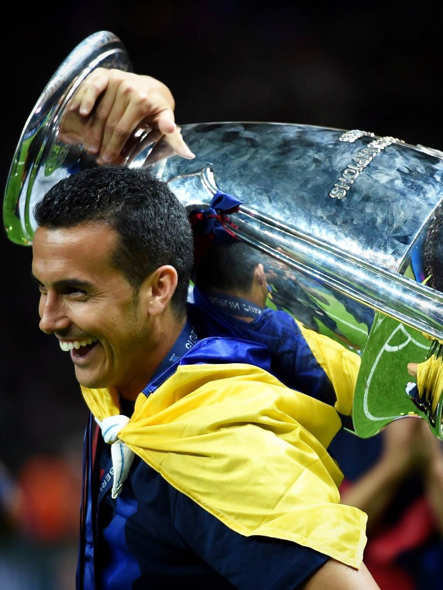

Pedro Rodríguez Retires from Football at 39
Sports
Former Barcelona, Chelsea and Spain winger Pedro Rodríguez has announced his retirement from professional football at the age of 39.
The Tenerife-born forward shared the news on Wednesday in a message on social media. "I feel the time has come," he wrote, adding that he was ready to begin a new chapter in his life. He said he leaves proud of having lived his dream and thanked the people who stood by him along the way. He signed off with a simple message to the game itself: "Thank you, football, for making me so happy."
Pedro moved to Barcelona from Tenerife at 17 and rose through the club's youth system and Barça B before making his first-team debut in the 2007/08 season. He signed his first senior contract in 2009 and went on to become a key player in one of the most successful eras in the club's history. In more than a decade at Barcelona he made over 200 appearances and scored 99 goals, winning five La Liga titles, three Copa del Rey trophies and three Champions League crowns.
In 2015 he joined Chelsea, where he spent five years in the Premier League. He later played in Italy for Roma and Lazio, leaving Lazio this summer when his contract ended.
For Spain, Pedro won 65 caps between 2010 and 2017 and was part of the golden generation that won the 2010 World Cup in South Africa and the 2012 European Championship.
Reflecting on his time at Barcelona, he said being part of the best Barça in history was a privilege, and that his heart will always be a Barça fan's. The club responded that he will always be part of its history.
Barcelona will mark his retirement with a farewell event this Friday, 9 October, at the Auditori 1899, starting at 11:30am CEST.